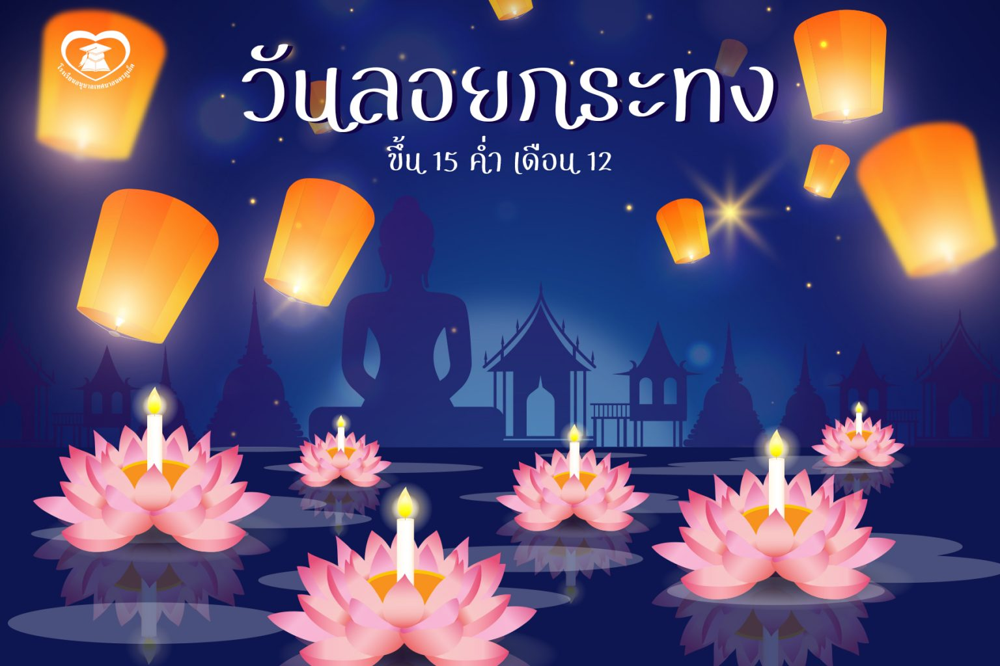

หน้าแรกประวัติวันลอยกระทง
วันลอยกระทง 2567(Loy Krathong Festival)
"ลอยกระทง" เป็นพิธีอย่างหนึ่งที่มักจะทำกันในคืนวันเพ็ญ เดือน 12 หรือวันขึ้น 15 ค่ำเดือน 12
อันเป็นวันพระจันทร์เต็มดวง และเป็นช่วงที่น้ำหลากเต็มตลิ่ง โดยจะมีการนำดอกไม้ ธูป เทียนหรือสิ่งของใส่ลงในสิ่งประดิษฐ์รูปต่างๆ ที่ไม่จมน้ำ เช่น กระทง เรือ แพ ดอกบัว ฯลฯ แล้วนำไปลอยตามลำน้ำ โดยมีวัตถุประสงค์ และความเชื่อต่างๆกัน
ในปีนี้ วันลอยกระทง ตรงกับวันที่ 15 พฤศจิกายน 2567
"ประเพณีลอยกระทง" (Loy Krathong Festival) มิได้มีแต่ในประเทศไทยเท่านั้น ในประเทศจีน อินเดีย เขมร ลาว และพม่า ก็มีการลอยกระทงคล้ายๆ กับบ้านเรา
จะต่างกันบ้าง ก็คงเป็นเรื่องรายละเอียด พิธีกรรม และความเชื่อในแต่ละท้องถิ่น แม้แต่ในบ้านเราเอง การลอยกระทง ก็มาจากความเชื่อที่หลากหลายเช่นกัน ซึ่งกลุ่มประชาสัมพันธ์ สำนักงานคณะกรรมการวัฒนธรรมแห่งชาติ กระทรวงวัฒนธรรม
ได้รวบรวมมาบอกเล่าให้ทราบกันดังต่อไปนี้
ประวัติความเป็นมาของวันลอยกระทง
ประเพณีลอยกระทงนั้น ไม่มีหลักฐานระบุแน่ชัดว่าประเพณีลอยกระทงเริ่มตั้งแต่เมื่อใด แต่เชื่อว่า
ประเพณีลอยกระทงนี้ได้สืบต่อกันมายาวนานตั้งแต่สมัยสุโขทัย โดยในรัชสมัยพ่อขุนรามคำแหง เรียกประเพณีลอยกระทงนี้ว่า " พิธีจองเปรียญ " หรือ " การลอยพระประทีป " และมีหลักฐานจากศิลาจารึกหลักที่ ๑ กล่าวถึงงานเผาเทียนเล่นไฟว่าเป็นงานรื่นเริงที่ใหญ่ที่สุดของกรุงสุโขทัย ทำให้เชื่อกันว่างานดังกล่าวน่าจะเป็นงานลอยกระทงอย่างแน่นอนประเพณีลอยกระทงสืบต่อกันเรื่อยมา จนถึงกรุงรัตนโกสินทร์ตอนต้น สมัยรัชกาลที่ ๑ ถึง รัชกาลที่ ๓ พระบรมวงศานุวงศ์ตลอดจนขุนนางนิยมประดิษฐ์กระทงใหญ่เพื่อประกวดประชันกัน ซึ่งต้องใช้แรงคนและเงินจำนวนมาก พระบาทสมเด็จพระจอมเกล้าเจ้าอยู่หัวรัชกาลที่ ๔ ทรงเห็นว่าเป็นการสิ้นเปลือง จึงโปรดให้ยกเลิกการประดิษฐ์กระทงใหญ่แข่งขันและโปรดให้ พระบรมวงศานุวงศ์ทำเรือลอยประทีปถวายองค์ละลำแทนกระทงใหญ่และเรียกชื่อว่า "เรือลอยประทีป" ต่อมาในรัชกาลที่ ๕ และรัชกาลที่ ๖ ได้ทรงฟื้นฟูพระราชพิธีนี้ขึ้นมาอีกครั้ง
ในสมัยก่อนนั้นพิธีลอยกระทงจะเป็นการลอยโคม โดยพระบาทสมเด็จพระจุลจอมเกล้าเจ้าอยู่หัว
รัชกาลที่ ๕ ได้ทรงสันนิษฐานว่า พิธีลอยกระทงเป็นพิธีของพราหมณ์ จัดขึ้นเพื่อบูชาเทพเจ้า ๓ องค์ คือ พระอิศวร พระนารายณ์ และพระพรหม ต่อมาได้นาพระพุทธศาสนาเข้าไปเกี่ยวข้อง จึงให้มีการชักโคม
เพื่อบูชาพระบรมสารีริกธาตุและลอยโคมเพื่อบูชารอยพระบาทของพระพุทธเจ้า ก่อนที่นางนพมาศ หรือ ท้าวศรีจุฬาลักษณ์ สนมเอกของพระร่วงจะคิดค้นประดิษฐ์กระทงดอกบัวขึ้นเป็นคนแรกแทนการลอยโคม
ลอยกระทงเป็นประเพณีของไทยที่ปฏิบัติสืบต่อกันมาแต่โบราณ งานลอยกระทงเริ่มทำตั้งแต่กลางเดือน ๑๑ ถึงกลางเดือน ๑๒ ซึ่งเป็นฤดูน้ำหลาก น้ำจะเต็มสองฝั่งแม่น้ำที่นิยมมากคือ ช่วงวันเพ็ญเดือน ๑๒ เพราะพระจันทร์เต็มดวง
ทำให้แม่น้ำใสสะอาด แสงจันทร์ส่องเวลากลางคืน เป็นบรรยากาศที่สวยงามเหมาะแก่การลอยกระทง เดิมพิธีลอยกระทงเรียกว่า พระราชพิธีจองเปรียงชักโคม ลอยโคม ซึ่งเป็นพิธีของพราหมณ์ เพื่อบูชาพระเป็นเจ้าทั้งสาม
คือ พระอิศวร พระนารายณ์และพระพรหม ครั้นคนไทยรับนับถือพระพุทธศาสนา ก็ทำพิธียกโคมเพื่อบูชาพระบรมสารีริกธาตุ พระจุฬามณี ณ สวรรค์ชั้นดาวดึงส์ ลอยโคมบูชาพระพุทธบาท ณ หาดทรายแม่น้ำนัมมทานที ประเทศอินเดีย
วัตถุประสงค์ของวันลอยกระทง
วัตถุประสงค์ เพื่อบูชาพระอุปคุตเถระที่บำเพ็ญบริกรรมคาถาในท้องทะเลลึก หรือสะดือทะเล บางแห่งก็ลอยกระทง เพื่อบูชาเทพเจ้าตามความเชื่อของตน บางแห่งก็เพื่อแสดงความขอบคุณพระแม่คงคา ซึ่งเป็นแหล่งน้ำให้มนุษย์ได้ใช้ประโยชน์ต่างๆ เหตุนี้ จึงได้ลอยกระทงในฤดูกาลน้ำมาก
ทำไมกระทงส่วนใหญ่เป็นรูปดอกบัว
ในหนังสือตำรับท้าวศรีจุฬาลักษณ์ หรือตำนานนางนพมาศ ซึ่งเป็นพระสนมเอก ของพระมหาธรรมราชาลิไทยหรือพระร่วง แห่งกรุงสุโขทัย ได้กล่าวถึงวันเพ็ญเดือนสิบสองว่า เป็นเวลาเสด็จประพาสลำน้ำ ตามพระราชพิธีในเวลากลางคืน และได้มีรับสั่งให้บรรดาพระสนมนางในทั้งหลาย ตกแต่งกระทงประดับดอกไม้ธูปเทียน นำไปลอยน้ำหน้าพระที่นั่ง ในคราวนั้น ท้าวศรีจุฬาลักษณ์ หรือนางนพมาศพระสนมเอก ก็ได้คิดประดิษฐ์กระทงเป็นรูปดอกบัวกมุทขึ้น ด้วยเห็นว่าเป็นดอกบัวพิเศษ ที่บานในเวลากลางคืนเพียง
ปีละครั้งในวันดังกล่าว สมควรทำเป็นกระทงแต่งประทีป ลอยไปถวายสักการะรอยพระพุทธบาท ซึ่งเมื่อพระร่วงเจ้าได้ทอดพระเนตรเห็น ก็รับสั่งถามถึงความหมาย นางก็ได้ทูลอธิบายจนเป็นที่พอพระราชหฤทัย พระองค์จึงมีพระราชดำรัสว่า "แต่นี้สืบไปเบื้องหน้าโดยลำดับ กษัตริย์ในสยามประเทศ ถึงกาลกำหนดนักขัตฤกษ์ วันเพ็ญเดือน 12 ให้นำโคมลอยเป็นรูปดอกบัว อุทิศสักการบูชาพระพุทธบาทนัมมทานที ตราบเท่ากัลปาวสาน" ด้วยเหตุนี้ เราจึงเห็นโคมลอยรูปดอกบัวปรากฏมาจนปัจจุบัน
กิจกรรม วันลอยกระทง
1. นํากระทงไปลอยตามแม่น้ำลําคลอง หรือตามแหล่งน้ำที่มีการจัดพิธี
2. ให้การสนับสนุนกิจกรรมต่าง ๆ ในวันลอยกระทง เช่น การประกวดกระทง ประกวดนางนพมาศ
การละเล่นพื้นเมือง เช่น รําวงเพลงเรือ เพื่อสืบสานวัฒนธรรมไทย
3. จัดนิทรรศการ หรือพิธีลอยกระทง เพื่อเผยแพร่และอนุรักษ์ประเพณีไทย
4. จัดรณรงค์ให้มีการใช้วัสดุจากธรรมชาติมาทํากระทง เพื่อไม่ให้เกิดมลภาวะแก่แม่น้ำลําคลอง
การลอยกระทงของชาวเหนือ (ยี่เป็ง)
การลอยกระทงของชาวเหนือ นิยมทำกันในเดือนยี่เป็ง (คือเดือนยี่หรือเดือนสอง เพราะนับวันเร็วกว่าของเรา 2 เดือน) เพื่อบูชาพระอุปคุตต์ซึ่งเชื่อกันว่าท่านบำเพ็ญบริกรรมคาถาอยู่ในท้องทะเล ลึกหรือสะดือทะเล ตรงกับคติของชาวพม่า
การลอยกระทงในภาคอีสาน
เรียกว่าเทศกาลไหลเรือไฟ จัดเป็นประเพณียิ่งใหญ่ในจังหวัดนครพนม โดยการนำหยวกกล้วยหรือวัสดุต่าง ๆ มาตกแต่งเป็นรูปพญานาคและรูปอื่น ๆ ตอนกลางคืนจุดไฟปล่อยให้ไหลไปตามลำน้ำโขงดูสวยงามตระการตา
อ้างอิง
ข้อมูล :
https://www.sanook.com/campus/910912/
https://shorturl.asia/KhcEf
http://www.3armyarea-rta.com/vocation/loy_katong.html
รูปภาพ :
https://www.pinterest.com/pin/708542953859725478/
พื้นหลัง :
https://shorturl.asia/msAyW

ไปหน้าสอง